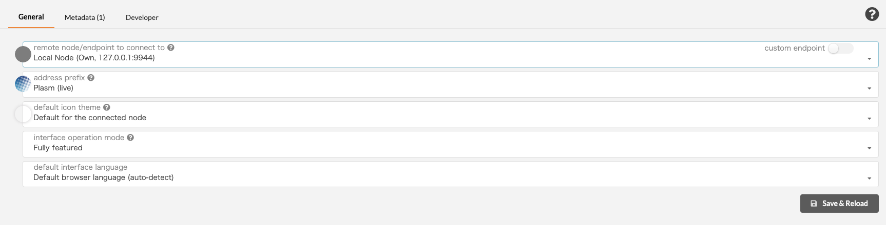

Realtime Lockdrop
Declaimer: This is an experimental module. Some features don't work or work with issues. Please report problems on GitHub when you find.
Quick Install
Install dependencies according to README.
Fetch the custom lockdrop branch of plasm-node.
git clone https://github.com/staketechnologies/Plasm -b plasm-real-time-lockdrop && cd Plasm
- Build Plasm binary.
cargo build --release
Preparing for tests
- Launch your node in your development environment:
./target/release/plasm-node --dev
Previous versions of db should be removed before the launch:
./target/release/plasm-node purge-chain --dev
Open Plasm Portal "Settings page".
Choose
Local Nodein the remote node section.Check out the "Developer" tab and put the following custom types.

{
"ClaimId": "H256",
"Lockdrop": {
"type": "u8",
"transaction_hash": "H256",
"public_key": "[u8; 33]",
"duration": "u64",
"value": "u128"
},
"TickerRate": {
"authority": "u16",
"btc": "DollarRate",
"eth": "DollarRate"
},
"DollarRate": "u128",
"AuthorityId": "AccountId",
"AuthorityVote": "u32",
"ClaimVote": {
"claim_id": "ClaimId",
"approve": "bool",
"authority": "u16"
},
"Claim": {
"params": "Lockdrop",
"approve": "AuthorityVote",
"decline": "AuthorityVote",
"amount": "u128",
"complete": "bool"
}
}
Price Oracle
After the launch, your authority node starts to fetch and send the current USD price of BTC and ETH into your chain. By opening explorer, you can see the dollar rate extrinsics in each imported module. This dollar rate is used in Lockdrop Substrate Pallet for checking the price during the Lockdrop periods.

Lockdrop Request
We have deployed the Lockdrop smart contract on Ethereum Ropsten network just for testing purpose. You can check from https://ropsten.etherscan.io/address/0xeed84a89675342fb04fafe06f7bb176fe35cb168
Let's send a transaction to the lockdrop smart contract using Etherscan and Metamask!

After locking your ETH, you can make a claim on your local chain.

You can used a test data below:
0x6c4364b2f5a847ffc69f787a0894191b75aa278a95020f02e4753c76119324e0
0x039360c9cbbede9ee771a55581d4a53cbcc4640953169549993a3b0e6ec7984061
2592000
100000000000000000

And here is the results available on chain: